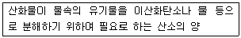
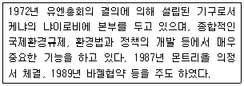
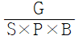
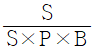
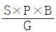
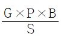
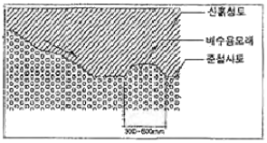
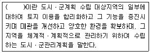
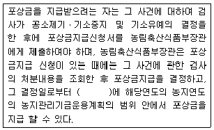

자연생태복원기사(구) (2014-03-02 기출문제)
1과목: 환경생태학개론
1. 생태적 피라미드(ecologlcar pyramid)중 군집에 기능적 성질의 가장 좋은 전체도(全體圖)를 나타내며, 피라미드가 항상 정점이 위를 향한 똑바른 형태의 피라미드로서 생태학적으로 가장 큰 의의를 가진 것은?
- 개채수 피라미드
- 에너지 피라미드
- 개체군 피라미드
- 생체량 피라미드
(정답률: 61%)

2. 발전소 등의 냉각수에 의한 열오염(thermal pollution)에 관한 설명으로 틀린 것은?
- 수온상승으로 물속의 용존산소가 감소한다.
- 생물체의 생식주기, 소화율 등에 영향을 미친다.
- 상승된 온도조건의 수계에서 생물체의 성장률은 감소된다.
- 해양에서 비정상적인 조류의 출현으로 적조가 야기될 수 있다.
(정답률: 53%)
3. 다음 개체군 생태학에서 사용되는 용어 중 사망률(mortality)에 대한 설명으로 가장 적합한 것은?
- 단위 공간당 개체군의 크기를 말한다.
- 단위 시간당 죽음에 의해서 개체들이 사라지는 숫자를 말한다.
- 단위 시간당 생식 활동에 의해서 새로운 개체들이 더해지는 숫자를 말한다.
- 개체들이 공간에 분포되는 방법으로서 임의분포, 균일분포, 집중분포 등으로 구분한다.
(정답률: 91%)
4. 생태적 천이에 따른 항상성에 대한 설명으로 틀린 것은?
- 천이 초기단계에서는 군락이 빨리 치환되므로 불안정하다.
- 군집이 성숙할수록 영양물 보존이 충분하다.
- 천이 초기단계에서는 내적공생이 발달한다.
- 성숙군집일수록 파괴에 대한 방어력이 커져 항상성이 증가한다.
(정답률: 76%)
5. 포유류 조사 중 족적, 배설물, 식혼 등에 의한 종 확인 방법에 해당 되는 것은?
- Field sigh
- Sand track
- Snap trap
- Point census
(정답률: 77%)
6. 다음은 무엇에 대한 설명인가?
- 툰드라
- 열대우림
- 온대낙엽수림
- 북방침엽수림
(정답률: 91%)
7. 해수와 담수의 염분 기울기(salinity geadient)에 대한 설명 중 옳지 않은 것은?
- 강우로 인한 담수 유입이 많은 곳의 경우, 염분기울기는 완전한 외양수 농도에서 완전한 담수 농도까지 나타나기도 하며, 실제 이러한 경우를 하구역에서 종종 볼수가 있다.
- 하구역에서는 담수와 해수가 섞이기 때문에 종다양도가 매우 높으며, 몇몇 종의 생체량과 밀도가 매우 낮다.
- 대부분의 조간대에서 염분의 변화는 조석에 의해서 일어나기 때문에 변화 그 자체는 주기적이며 상당 부분 예견이 가능하다.
- 갯벌지역의 경우, 고인 물의 형태가 곳곳에 산재하고 있으며, 이들은 강우로 인해 희석되기도 하고, 밀물 시 증발로 인해 염분이 높아지기도 하는 등의 염분변화가 심하다.
(정답률: 73%)
8. UNESCO의 MAB(Man and Biosphere Reserve)의 평가기준에서 “희귀종, 고유종, 멸종위기종이 많은 곳” 으로 구분한 이 지역은?
- 완충지역(Buffer Area)
- 전이지역(Transition Area)
- 가치지역(Value Area)
- 핵심지역(Core Area)
(정답률: 73%)
9. 황산암모늄, 황산칼륨, 염화칼륨 등의 비료성분이 가져올 수 있는 토양환경의 변화는?
- 토양 부영양화
- 토양 산성화
- 토양 건조화
- 토양 사막화
(정답률: 88%)
10. 어떤 환경에서 생물체가 여러 해 동안 점근선 밀도(K) 가까이에 존재하며, 이러한 생물체는 K 선택을 받는다. 다음 중 K-선택생물의 특징이 맞는 것은?
- 짧은 생활사를 갖는다.
- 부모로부터 자원의 분배가 적다.
- 몸집이 큰 소수의 자손을 생산한다.
- 일찍 성숙하여 생식률을 높인다.
(정답률: 66%)
11. 한 종이 점유지역이 아닌 곳으로 분포범위를 넓히는 영역 확장(range expansion)의 경우가 아닌 것은?
- 그 종의 산포를 저해하던 요인이 제거된 경우
- 종이 진화되어 부적당지역이 적당지역으로 이용할 수 있게 된 경우
- 그 종이 양육과 훈련행동을 하는 경우
- 이전에는 부적당하던 지역이 적당한 지역으로 변화된 경우
(정답률: 86%)
12. 수질의 부영양화 현상과 가장 거리가 먼 것은?
- 용존산소의 고갈
- 적조현상
- N, P의 과량 유입
- 생물농축
(정답률: 84%)
13. 대규모의 산림도로정비가 생태계에 미치는 영향 중 옳지 않은 것은?
- 도로 부설로 인해 산림생태계의 일부가 없어져 버린다.
- 절토, 성토를 통해 인공적인 경사면이 형성되며 통과차량에 의해 식생의 변화가 생긴다.
- 기초시설의 매설로 인해 지하 수맥이 변화하고 습지 환경의 소멸이 일어나기도 한다.
- 대규모 지형변화가 있을 경우 지하터널보다는 절토를 하여 시공하도록 한다.
(정답률: 88%)
14. 1차 천이의 개척자 생물군은 무엇인가?
- 지의류
- 잡초
- 관목
- 교목
(정답률: 87%)
15. 해양오염 물질에 대한 각 분류군별 독성의 정도는 다르다. 다음 생물 중 오염물질에 대한 독성의 정도가 가장 높은 분류군은?
- 플랑크톤
- 저서무척추동물
- 연체동물
- 어류
(정답률: 75%)
16. 다음 물질 중 중금속에 의한 오염의 원인물질로 최초 과정에 해당되는 것은?
- 카드뮴
- 수은
- 오존
- 납
(정답률: 59%)
17. 에너지가 무기 환경에서 생물계로 들어오는 최초 과정에 해당되는 것은?
- 분해자에 의한 생물 사체의 분해
- 생산자의 1차 소비자에 의한 소비
- 생산자의 광합성
- 1차 소비자의 2차 소비자에 의한 소비
(정답률: 81%)
18. 다음은 무엇을 설명한 것인가?

- DO
- BOD
- COD
- SS
(정답률: 72%)
19. 다음 육상생태계의 구조와 기능을 비교하였을 때 산림생태계가 가지는 특징을 정확하게 설명한 것은?
- 생산자인 수목류는 수명이 수십에서 수백년으로 길고 크게 성장하기 때문에 거대한 현존량을 가진다.
- 수목류와 초본류로 단순하게 이루어져 있기 때문에 다른 육상생태계에 비해 생산력이 낮다.
- 수관, 하층의 수목군, 임상 등의 산림계층구조로 구성되어 생태ㆍ생리적인 특성이 동일한 식물종이 수직적으로 분포한다.
- 수목류는 태양에너지의 흡열층이 되고 지표에서는 방사열을 억제하기 때문에 일교차가 큰 온도 환경을 만들어 낸다.
(정답률: 74%)
20. 다년생 식물이 아닌 것은?
- 참억새
- 코스모스
- 붓꽃
- 달맞이꽃
(정답률: 77%)
2과목: 환경계획학
21. 계획은 사회의 보편적 가치를 토대로 한 집합적 의사결정 시스템으로 존재하는 동시에 현실의 문제를 해결하는 기술적 해결책으로 역할을 하기도 한다. 이에 기초해 논의되는 초지이용계획의 역할로 틀린 것은?
- 난개발의 방지
- 사회의 지속가능성을 위한 토지의 보전 기능
- 세부 공간환경설계에 대한 지침 제시
- 토지이용현황의 적합성 판단과 규제 수단 제시
(정답률: 62%)
22. 국토 교통부장관, 시ㆍ도지사 또는 대도시 시장은 관련 규정에 따라 도시ㆍ군관리계획결정으로 「경관지구」를 세분화할 수 있는데 이에 해당하지 않는 것은?
- 수변경관지구
- 자연경관지구
- 역사문화경관지구
- 시가지경관지구
(정답률: 48%)
23. 지속가능한 개발과 경제성장곡선에 관한 설명으로 틀린 것은?
- 현 상황하의 성장인 경우에는 급격한 경제성장 시점이 있다.
- 현 상황하의 성장인 경우에는 경제성장이 하강하는 부분이 나타나지 않을 것이다.
- 지속가능한 성장을 할 경우에는 경제성장속도가 완만한 곡선의 형태를 나타낸다.
- 지속가능한 성장을 할 경우에는 하강하는 부분이 나타나지 않을 것이다.
(정답률: 57%)
24. 생태 네트워크를 구성하는 요소가 아닌 것은?
- 핵심지역
- 개발지역
- 완충지역
- 생태적 코리더
(정답률: 80%)
25. 다음 설명은 어느 국제협력기구의 설명인가?

- 유엔개발계획(UNDP)
- 지구위원회(Earth Council)
- 유엔환경계획(UNEP)
- 지속발전위원회(the Commission Sustainable Development)
(정답률: 79%)
26. 국토의 계획 및 이용에 관한 법률에 의한 광역도시계획 및 시ㆍ군 기본계획의 설명으로 틀린 것은?
- 국토해양부장관은 광역도시계획을 변경하려면 관계 시ㆍ도지사에게 광역도시계획안을 송부하여야 하며, 관계 시 ㆍ도지사는 그 광역도시계획안에 대하여 그 시ㆍ도의 의회와 관계 시장 또는 군수의 의견을 들은 후 그 결과를 국토해양부장관에게 제출하여야 한다.
- 국가계획과 관련된 광역도시계획의 수립이 필요한 경우나 광역계획권을 지정한 날부터 3년이 지날 때까지 관할 시ㆍ도지사로부터 관련 규정에 따른 광역 도시 계획의 승인이 없는 경우 국토해양부장관이 수립한다.
- 특별시장ㆍ광역시장ㆍ특별자치시장ㆍ특별자치도지사ㆍ시장 또는 군수는 5년마다 관할 구역의 도시ㆍ군기본계획에 대하여 그 타당성을 전반적으로 재검토하여 정비하여야 한다.
- 시장 또는 군수는 도시ㆍ군기본계획을 수립하거나 변경하려면 대통령령으로 정하는 바에 따라 국토해양부 장관의 승인을 받아야 한다.
(정답률: 37%)
27. 주거ㆍ상업 또는 공업지역에서의 개발행위로 인하여 기반시설(도시ㆍ군계획시설을 포함)의 처리ㆍ공급 또는 수용능력이 부족할 것으로 예상되는 지역 중 기반시설의 설치가 곤란한 지역에 대해 지정할 수 있는 구역은?
- 개발밀도관리구역
- 개발제한구역
- 시설용도제한구역
- 기반시설부담구역
(정답률: 38%)
28. 환경친화적 택지개발계획 수립을 위한 기본원칙으로서 자연자원보전 및 복원부문의 내용에 맞지 않는 것은?
- 물순환을 고려하여 보도 등은 불투수성 재료로 포장하여 우수담수를 위한 오픈공간을 조성한다.
- 건물옥상 및 인공지반을 이용하여 옥상녹화, 인공지반녹화, 벽면녹화 등을 통하여 녹지면적을 최대한 확대한다.
- 보전가치가 있는 지형ㆍ지질의 존재 유무와 보전대책 및 임상이 양호한 임야지역의 보전대책을 마련한다.
- 단지 내 단위 거점소생물권의 연못, 채원, 자연학습원, 약초원, 유실수원 등을 균등하게 배치하고 이들의 그린 네트워크를 구축한다.
(정답률: 66%)
29. 계획 및 이용에 관한 법률상 용어 설명이 옳지 않은 것은?
- 공동구 : 지하매설물을 공동 수용함으로써 미관의 개선, 도로구조의 보전 및 교통의 원활한 소통을 위하여 지하에 설치하는 시설물
- 용도지구 : 토지의 이용 및 건축물의 용도ㆍ건폐율ㆍ용적율ㆍ높이 등에 대한 용도지역의 제한을 강화 또는 완화하여 적용함으로써 용도지역의 기능을 증진시키고 미관ㆍ경관ㆍ안전 등을 도모하기 위하여 도시ㆍ군관리 계획으로 결정하는 지역
- 개발밀도관리구역 : 개발로 인하여 기반시설의 부족할 것으로 예상되나 기반시설의 설치가 곤란한 지역을 대상으로 건폐율 또는 용적율ㆍ높이ㆍ녹지율을 강화하여 적용하기 위하여 지정하는 구역
- 기반시설부담구역 : 개발밀도관리구역 외의 지역으로서 개발로 인하여 기반시설의 설치가 필요한 지역을 대상으로 기반시설을 설치하거나 그에 필요한 용지를 확보하게 하기 위하여 관련 규정에 의해 지정ㆍ고시하는 구역
(정답률: 52%)
30. 오늘날 야기되는 대표적인 환경문제가 아닌 것은?
- 이산화탄소 감소
- 대기오염
- 지구온난화
- 자원고갈
(정답률: 74%)
31. 산림청장은 환경부장관과 협의하여 보호지역의 지정을 해제하거나 변경 할 수 있는데, 이 백두대간 보호지역의 지정해제 요건이 아닌 것은?
- 보호지역의 지정목적 상시
- 핵심구역과 완충구역 간 구역변경이 필요하다고 인정하는 경우
- 보호지역 지정 10년경과 후 사유자의 매입으로 인해 사유지가 된 경우
- 자연적ㆍ사회적ㆍ경제적ㆍ지역적 여건 변화 등으로 인해 보호지역으로 계속 지정 관리 할 필요가 없는 경우
(정답률: 64%)
32. 환경계획을 위해 요구되는 생태학적 지식으로 볼 수 없는 것은?
- 자연계를 설명하는 이론으로서 순수생태학적 지식
- 훼손된 환경의 복원과 새로운 환경건설에 관련된 지식
- 인간의 환경의 복원과 새로운 환경건설에 관련된 지식
- 토지이용계획 수립에 필요한 지역의 개발계획에 관련된 정보
(정답률: 61%)
33. 환경문제의 특성에 해당되지 않는 사항은?
- 엔트로피 감소
- 상호관련성
- 광역성
- 시차성
(정답률: 71%)
34. 현대 산업사회의 환경문제에 대한 시각에 해당하지 않는 흐름은?
- 기술중시주의
- 인간중시주의
- 생태중시주의
- 개발중시주의
(정답률: 53%)
35. 환경정책의 추진 원칙이 될 수 없는 것은?
- 오염원인자 책임원칙
- 사전예방의 원칙
- 공동부담의 원칙
- 오염배출원 증가의 원칙
(정답률: 68%)
36. 환경부장관은 자연환경보전기본계획의 시행성과를 몇 년마다 정기적으로 분석ㆍ평가하고 그 결과를 자연환경보전정책에 반영하여야 하는가?
- 2년
- 3년
- 5년
- 10년
(정답률: 37%)
37. 자연공원을 효율적으로 보전하고 이용하기 위하여 결정하는 용도지구가 아닌 것은?
- 공원자연보존지구
- 공원자연환경지구
- 공원문화유산지구
- 공원집단시설지구
(정답률: 55%)
38. 전체 1km2 개발대상지를 조사한 결과 논이 0.5km2, 20년 이상된 2차 림이 0.1km2, 과수원이 0.2km2, 잣나무 조림지가 0.2km2로 조사되었다. 이를 바탕으로 녹지자연도를 작성하였을 때 5등급 이상에 해당하는 면적의 비율은?
- 10%
- 20%
- 30%
- 40%
(정답률: 72%)
39. 환경지표는 정보전달의 제1종 지표와 가치평가의 제2종 지표의 제계로 나누어 볼 수 있는데, 다음 중 제 2종 지표로만 묶여진 것은?
- 물가지수, 대기질 종합지표
- 오염피해 지표, 대기질 종합지표
- 도시쾌적성ㆍ만족도지표, 오염피해 지표
- 오염피해 지표, 수질종합지표
(정답률: 63%)
40. 다음 중 지리정보체계(GIS)의 기능적 요소가 아닌 것은?
- 자료의 전처리
- 레이어
- 자료의 관리
- 조정과 분석
(정답률: 66%)
3과목: 생태복원공학
41. 야생동물 이동통로 조성시 야생동물의 유인 및 이동을 촉진시키기 위한 방법이 아닌 것은?
- 곤충의 유인 및 이동을 위해 먹이식물이나 일원식물을 적극 도입한다.
- 양서류의 이동을 위해 측구 등에 의한 이동용 보조통로를 설치한다.
- 조류의 유인을 위해 식이식물을 식재한다.
- 표유류의 이동을 위해 단층구조의 수림대를 조성한다.
(정답률: 77%)
42. 용도별 자생식물 구분 중 “암석원”에 식재하기 가장 적합한 식물은?
- 둥근잎꿩의비름
- 벌개미취
- 순비기나무
- 미나리
(정답률: 48%)
43. 다음 중 대규모 건설사업이 생태환경에 미치는 영향과 가장 거리가 먼 것은?
- 생물 서식지의 훼손 및 손실
- 생물 서실지의 단절 및 분절
- 생물종 다양성의 지속적 유지
- 생태계 기능의 변화
(정답률: 81%)
44. 식물군집이 성립하는 조건은 식물의 종이 군집적 질서를 지니는 조건이다. 어떤 식물종이 군집을 구성하기 위해 충족해야 할 조건으로 틀린 것은?
- 종(種)이 플로라(flora)의 분포영역 외부에 있어야 한다.
- 군집의 환경적 질서규제를 받아야 한다.
- 군집의 사회적 질서규제를 받아야 한다.
- 환경적 질서규제는 군집의 외적인 요소이고, 사회적 질서 규제는 내적 요인이다.
(정답률: 66%)
45. 절리가 있는 연암 및 경암의 정토 비탈면을 구하기 위한 녹화공법으로써 가장 적합한 것은?
- 종자뿜어붙이기
- 식생매트공법
- 식색구멍심기
- 식생기반재 뿜어붙이기
(정답률: 58%)
46. 다음 중 일반적으로 식물의 생육에 적합한 토양의 상태 조건으로 틀린 것은?
- 질소, 인산, 칼륨 등의 필요 성분을 되도록 포함할 것
- 투수성, 통기성, 배수성이 좋을 것
- 부식질이 많고 부드러운 입자로 구성될 것
- 토양 PH가 가능한 한 약알칼리성에 가까울 것
(정답률: 73%)
47. 돌쌓기공사의 시공방법 설명으로 옳은 것은?
- 찰쌓기공법은 메쌓기공법보다 석축 뒤에 물빼기에 특별히 유의하지 않아도 된다.
- 돌쌓기벽의 기울기는 일반적으로 찰쌓기공법에서 1:0:3, 메쌓기공법에서 1:0:2를 표준으로 한다.
- 돌과 돌 사이는 채움돌과 자갈 등으로 채우고, 위로 부터의 압력이 균등하게 전달되도록 시공한다.
- 넷붙임과 넷에움은 돌의 사용개수가 같다.
(정답률: 60%)
48. 다음 중 파종중량(W)의 산출식으로 옳은 것은? (단, G : 발생기대본수(본/m2), S : 평균입수(일/g), P : 순량률(%), B : 발아율(%))




(정답률: 69%)
49. 다음 유효수분량에 대한 설명 중 틀린 것은?
- 유효수분량은 식물이 이용할 수 있는 토양속의 수분량을 가리키는 것이다.
- 일반적으로 pF1.8(포장용수량)과 pF5.0(영구위조점)의 수분량의 차를 이효성(易效性) 유효수분이라고 한다.
- 일반적으로 이효성유효수분량의 수치를 L/m3 단위로 표시하여 토양의 보수력을 평가한다.
- 유효수분량은 일반적으로 80L/m3 이상이 바람직하다.
(정답률: 66%)
50. 조(鳥)류 서식지의 복원시 종별 선호하는 서식처를 잘못 연결한 것은?
- 꼬마물떼새, 노랑할미새 - 돌틈, 바위
- 쇠제비갈매기, 흰물떼새 - 모래, 자갈땅
- 덤불해오라기, 황로 - 수심이 깊은 곳
- 개개비, 물닭 - 갈대
(정답률: 64%)
51. 다음 환경 포텐셜에 관한 설명 중 옳은 것은?
- 입지포텐셜은 기후, 지형, 토양 등의 토지적인 조건이 어떤 생태계의 성립에 적당한가를 나타내는 것이다.
- 종의 공급포텐셜은 먹고 먹히는 포식의 관계나 자원을 둘러싼 경쟁관계 등 생물간의 상호작용을 나타내는 포텐셜이다.
- 천이의 포텐셜은 생태계에서 종자나 개체가 다른 곳으로부터 공급의 가능성을 나타내는 것이다.
- 종간관계의 포텐셜은 시간의 변화가 어떤 과정과 어떤 속도로 진행되며 최종적으로 어떤 모습을 나타내는 가를 보여주는 가능성을 나타내는 것이다.
(정답률: 74%)
52. 생물 서식처로서 식재기반이 갖추어야 할 요건은 공간적 요건과 물리적 요건으로 구분되는게 다음 중 공간적 요건에 해당하지 않는 것은?
- 물리적 연결성
- 생태적 연결성
- 배수성
- 접근성
(정답률: 64%)
53. 물에 의한 토양침식의 형태 및 유형 중 빗물침식과 관계가 가장 먼 것은?
- 복류수침식
- 빗방울침식
- 면상침식
- 누구침식
(정답률: 67%)
54. 광선을 복원하기 위해 산림 표층토를 이용하려고 한다. 산림 표층토의 특징 설명으로 틀린 것은?
- 산림표토를 이용하면 포토안의 매토종자의 종조성, 밀도, 성립하는 군락상 등의 예측이 곤란하다.
- 산림표토를 이용하면 시공장소에 현존하는 식물을 사용한 녹화가 가능하다.
- 산림표토를 이용하면 빠른 시간에 군락형성이 가능하다.
- 산림표토를 이용하면 지역고유의 유전자를 갖고 있는 목본군락의 형성이 기대된다.
(정답률: 42%)
55. 광선지역의 생태적 복원공법 중 식생이 정착할 수 있는 환경만을 제공하는 공법은?
- Managed Succession
- Colonization
- Naturalization
- Nucleation
(정답률: 39%)
56. 다음 생태분류군과 식물종 관계의 나열 중 틀린 것은?
- 정수식물 - 갈대
- 부엽식물 - 줄
- 침수식물 - 검정말
- 부유식물 - 생이가래
(정답률: 77%)
57. 다음 단면도는 산흙 식재기반 조성의 하부층이 사질토인 경우이다. 공법명칭과 설명이 맞는 것은?

- 전면객토법 : 치환객토법의 하나로 식재지 전체를 산흙으로 객토
- 성토법 : 외부에서 반입한 산흙을 성토해주는 공법
- 대상객토법 : 산흙을 절약하는 공법
- 단목객토법 : 가로수나 독립수를 식재할 때 활용하는 공법
(정답률: 51%)
58. 생태 네트워크의 시행방안 설명으로 틀린 것은?
- 녹지체계는 생태통로, 녹도, 보행자 전용도로 등 선형의 생물이동통로를 조성하여 그린네트워크를 형성한다.
- 공원 및 옥외공간의 녹화는 경관향상을 위한 녹화를 하며 평면구조의 생태적인 기법으로 녹화한다.
- 생물이 이동할 수 있도록 중앙의 핵심녹지를 중심으로 거점녹지(면녹지), 점녹지를 체계적으로 연결한다.
- 기존 수자원, 즉 호소, 하천, 실개천 등을 적극적으로 보전하고 최대한 계획에 활용한다.
(정답률: 69%)
59. 고체상태 또는 액체상태의 대기오염물질이 식물체의 표면에 부착되는 현상을 무엇이라 하는가?
- 흡수
- 확산
- 희석
- 흡착
(정답률: 78%)
60. 비탈다듬기공사에서 단면적 A1, A2는 각각 2.1m2, 0.7m2이며 A1과 A2의 거리가 6m인 경우, 평균단면적법을 이용하여 계산한 토사량은?
- 16.8m3
- 8.8m3
- 8.4m3
- 2.4m3
(정답률: 63%)
4과목: 경관생태학
61. 도시생태계 평가에 사용될 수 있는 방안 중 틀린 것은?
- 환경영향평가제도
- 사전환경성검토
- 산지특성평가
- 비오톱 평가
(정답률: 66%)
62. 지역적으로 분리되어 있으나 종의 이동이 일어나 교류가 일어나고 있으며 같은 계층구조를 갖는 개체군 중 최상위의 것을 무엇이라고 하는가?
- 국소개체군
- 메타개체군
- 최소존속개체군
- 지역개체군
(정답률: 77%)
63. 인공구조물에 의해 연안경관의 변화를 창출하는 방법이 아닌 것은?
- 돌제
- 인공식재
- 이안제(離岸堤)
- 부유식 방파제
(정답률: 55%)
64. 콘크리트로 조성된 하안 및 제방은 경관생태학적으로 생물들의 서식 공간 및 이동통로의 역할을 수행하는데 어려움이 따르게 된다. 이를 해결하기 위한 복원방법으로 바람직하지 않은 것은?
- 수변구역에 가축이나 사람들에 의한 교란을 방지하고 기존의 식생이 자연적으로 회복할 수 있도록 한다.
- 버드나무 가지를 정돈하여 묶음을 만들어 하안에 말뚝을 박고 말뚝과 말뚝상에 버드나무 가지묶음을 넣어 식생이 발달되도록 한다.
- 보전하는 것보다 새롭게 형성하는 것이 좋으므로 둑의 끝부분을 복원하도록 하며, 둑 경사가 최대 60°가 되도록 조성한다.
- 버드나무 말뚝을 활용해 갑작스러운 홍수의 위험을 방지할 수 있도록 한다.
(정답률: 64%)
65. 다음 중 광산ㆍ채석장의 유형 구분 및 계획시 고려할 사항이 아닌 것은?
- 복구목표
- 채광ㆍ채석 종료시 형상
- 훼손지의 규모
- 서시거의 파편화
(정답률: 64%)
66. 미국의 Forman교수가 제시한 경관생태학에서 다루는 구조, 기능변화의 측면을 설명한 것 중 해당되지 않는 것은?
- 모자이크의 시간적 치환
- 생태계내의 에너지, 물질, 종의 이동
- 생태계의 분포나 생태계 사이의 공간적 관계
- 식물체의 광합성과 성장 관계
(정답률: 54%)
67. 해안 연안에 무절석회조류의 이상증식으로 인하여 발생하는 것으로, 어류자원 및 해조자원에 심각한 피해가 발생한다. 우리나라는 주로 동해안에 많이 발생하여 연안자원에 피해를 입히고 있는데 이 현상은?
- 적조현상
- 녹조현상
- 백화현상
- 청수현상
(정답률: 66%)
68. 다음 중 에코튼(Ecotone)에 대한 설명으로 틀린 것은?
- 필요한 완충대의 범위와 규모는 지형이나 지하수류와 같이 비오톱타입 및 주변의 영향으로부터 지켜야 할 종과 같은 다수의 조건에 따라 다르다.
- 비오톱에 대한 주위에서의 악영향(화학 비료와 화학 살충제의 피해, 가축의 답압 등)을 가능한 작게 유지하기 위해서는 충분한 넓이의 완충대를 확보해야 한다.
- 질소피해로 인하여 빈영양화된 호수는 부영양인 하반림보다도 더 폭넓은 완충대를 필요로 한다.
- 완충대의 넓이는 비오톱의 특성과 무관하게 결정해도 좋다.
(정답률: 75%)
69. 해류의 종류 중 하나로 압력경도력(perssure gradient)과 전향력(coriolis force)의 두 힘이 평형을 이루면서 일어나는 해수의 운동은?
- 취송류
- 지형류
- 경사류
- 밀도류
(정답률: 69%)
70. 다음 중 도시 비오톱 제도의 활용 가치에 대한 설명으로 옳지 않은 것은?
- 경관녹지계획 수립의 핵심적 기초 자료를 제공한다.
- 자연보호지역, 경관보호지역 및 주요 생물서식공간 조성의 토대를 제공한다.
- 생태 도시건설을 위한 기초 자료로는 큰 의미가 없다.
- 토양 및 자연체험공간 조성의 타당성 검토를 위한 기초 자료를 제공한다.
(정답률: 74%)
71. Landsat TM 위성자료의 활용에 대한 설명으로 옳은 것은?
- 밴드 1은 엽록소 흡수 및 식물의 종분화 등을 알 수 있다.
- 밴드 6은 육영과 수역의 분리에 용이하다
- 밴드 7은 식생의 구분에 적합하다.
- 밴드 3는 활력도 및 생물량 추정에 용이하다.
(정답률: 55%)
72. GIS은 구성요소 중 데이터에 관한 설명으로 옳지 않은 것은?
- 백터데이터의 위상구조는 점, 선, 면들의 공간형상들의 공간관계를 말한다.
- GIS 데이터는 중 벡터 데이터와 래스터 데이터는 속성 데이터에 속한다.
- 메타데이터는 데이터의 좌표체계 정보, 데이터 제작 및 프로세스 정보 등 자료의 유용한 정보를 목록화한 것이다.
- 래스터 데이터의 유형으로는 인공위성에 의한 이미지, 항공사진 이미지 등이 있다.
(정답률: 45%)
73. 서울시에서 분류한 비오톱(biotope)유형에 포함되지 않는 것은?
- 주거지 비오톱
- 불투수성 토양 비오톱
- 조경녹지 비오톱
- 산림지 비오톱
(정답률: 64%)
74. 다음 중 염분농도가 낮은 곳에서 높은 곳으로 분포하는 해안 염생식물의 나열이 옳게 된 것은?
- 부들 → 갈대 → 해홍나물
- 해홍나물 → 갈대 → 부들
- 갈대 → 해홍나물 → 부들
- 해홍나물 → 부들 → 갈대
(정답률: 64%)
75. 섬 생물지리학 이론 중 올바르지 않은 것은?
- 큰 섬에는 작은 섬보다 더 많은 종이 분포한다.
- 종 소멸은 작은 섬보다 큰 섬에서 더 잘 일어난다.
- 육지에 가까운 섬의 정잦(=이입)율은 멀리 떨어진 섬보다 높다.
- 대륙에서 가까운 섬에는 멀리 떨어진 섬보다 더 많은 종이 분포한다.
(정답률: 75%)
76. 다음의 위성명상 중 해상도가 가장 높은 영상으로서 정일 수치지형모뎅(DTM)추출, 수치지도 제작에 사용되는 영상은?
- Landsat ETM+
- Landsat TM
- NOAA
- IKONOS
(정답률: 59%)
77. 다음 중 경관의 개념과 연관성이 가장 적은 것은?
- 지역의 전체 특성
- 시각적으로 아름다운 매스
- 항공사진이나 높은 곳에서 내려다 본 면적
- 시각적으로 동질인 생태계의 집합체가 비슷한 형태로 반복적으로 나타나는 토지
(정답률: 43%)
78. 다음 생태축의 역할과 기능 중 생태적인 기능에 해당되지 않는 것은?
- 생물다양성의 유지 및 증대
- 녹시율의 증대
- 생태계간 에너지와 동물의 이동 증진
- 자연생태게와 인접한 도시생태계의 균형유지
(정답률: 64%)
79. 도로의 정비시 환경을 배려라기 위한 방법으로써 독일에서는 환경적 적응성을 검토하여 도로 계획을 수립한다. 환경적응성 검토를 위한 조치준서로 적합한 것은?
- 노선의 선정 → 공간민감성 분석 → 영향의 예측과 평가 → 환경보전 조치
- 공간민감성 분석 → 영향의 예측과 평과 → 환경보전 조치 → 노선의 선정
- 노선의 선정 → 영향의 예측과 평가 → 환경보전 조치 → 공간민감성 분석
- 공간민감성 분석 → 노선의 선정 → 영향의 예측과 평가 → 환경보전 조치
(정답률: 39%)
80. 환경영향평가의 영향예측과 관련하여 경관생태학적 관점에서 보다 구체화되어야 할 사항과 관련이 가장 적은 것은?
- 생태통로(또는 생태축)의 단절여부
- 생물서식공간에 미치는 영향
- 생태계의 유형별 영향예측
- 지역 고유종의 우점도
(정답률: 58%)
5과목: 자연환경관계법규
81. 독도 등 도서지역의 생태계 보전에 관한 특별법 시행령상 환경부장관이 조사원으로 하여금 무인도서 등의 자연생태계 등에 대한 원활한 조사를 하도록 하기 위해 관계중앙행정기관의 장 및 시ㆍ도지사에게 협조를 요청할 수 있는 사항으로 가장 거리가 먼 것은?
- 관할 출입제한구역안의 출입
- 도서조사원중의 발급 및 조사권 부여
- 조사에 필요한 선박 등 장비 및 인력의 지원
- 조사관련자료의 열람 또는 대출
(정답률: 60%)
82. 환경정책기본법상 국가 및 지방자치단체가 상시해야 하는 환경상태의 조사ㆍ평가 항목으로 가장 거리가 먼 것은?
- 환경의 질의 변화
- 환경오염 및 환경훼손실태
- 글로벌환경친화 전문이력 양성현황
- 환경오염원 및 환경훼손요인
(정답률: 67%)
83. 농지법규상 실습지 등으로 농지를 소유할 수 있는 공공단체 등의 범위에 해당하지 않는 것은?
- 「정신보건법」에 따른 정신의료기관(의료법인에 한정)
- 「과학기술분야 정부출연 연구기관 등의 설립ㆍ운영 및 육성에 관한 법률」에 따른 한국식품연구원 및 한국원자력연구원
- 「자영농업육성관리법」에 종묘보호시설
- 「문화재보호법」에 따라 중요무형문화재로 지정된 농요의 보존을 위한 비영리단체
(정답률: 44%)
84. 습지보전법상 습지보호지역으로 지정ㆍ고시된 습지를 공유수면 관리 및 매립에 관한 법률에 따른 면허없이 매립한 자에 대한 벌칙기준으로 옳은 것은?
- 5년 이하의 징역 또는 3천만원 이하의 벌금에 처한다.
- 3년 이하의 징역 또는 2천만원 이하의 벌금에 처한다.
- 2년 이하의 징역 또는 1천만원 이하의 벌금에 처한다.
- 1천만원 이하의 벌금에 처한다.
(정답률: 60%)
85. 농지법령상 이농당시의 소유농지를 계속하여 소유할 수 있는 자의 농업경영기간으로 “대통령령으로 정하는 기간”에 해당하는 기준은?
- 1년
- 3년
- 5년
- 8년
(정답률: 58%)
86. 국토의 계획 및 이용에 관한 법률상 토지의 이용실태 및 특성, 장래의 토지이용 방향, 지역간 균형발전 등을 고려하여 구분한 4가지 국토의 용도지역에 해당하지 않는 것은?
- 도시지역
- 공업지역
- 관리지역
- 자연환경보전지역
(정답률: 61%)
87. 국토기본법상 중앙행정기관의 장 또는 지방자치단체의 장이 수립할 수 있는 지역계획으로 가장 거리가 먼 것은? (단, 그 밖에 다른 법률에 따라 수립하는 지역계획 등은 고려하지 않는다.)
- 특정지역개발계획
- 광역권개발계획
- 공유수면매립계획
- 수도권발전계획
(정답률: 43%)
88. 야생생물 보호 및 관리에 관한 법률 시행규칙상 시장ㆍ군수ㆍ구청장은 박제업자에게 야생동물의 보호ㆍ번식을 위하여 박제품의 신고 등 필요한 명령을 할 수 있는 데 박제업자가 이에 따른 신고 등 명령을 위반한 경우, 각 위반차수별(개별) 행정처분기준으로 가장 적합한 것은?
- 1차 : 경고, 2차 : 경고, 3차 : 영업정지 3월, 4차 : 등록취소
- 1차 : 영업정지 1월, 2차 : 영업정지 3월, 3차 : 영업정지 6월, 4차 : 사업장 이전
- 1차 : 경고, 2차 : 영업정지 1월, 3차 : 영업정지 3월, 4차 : 등록취소
- 1차 : 영업정지 1월, 2차 : 영업정지 3월 : 영업정지 6월, 4차 : 등록취소
(정답률: 49%)
89. 국토의 계획 및 이용에 관한 법률 시행령상 기반시설의 분류 중 “보건위생시설”에 해당하는 것은?
- 폐차장
- 도축장
- 공공공지
- 수질오염방지시설
(정답률: 62%)
90. 다음은 국토의 계획 및 이용에 관한 법률상 이 법에서 사용하는 용어의 뜻에 관한 사항이다. ( )안에 알맞은 것은?

- 개발단위계획
- 개발실시계획
- 지구단위계획
- 도시기반계획
(정답률: 62%)
91. 산지관리법상 보전산지 중 “공익용산지” 에 해당하지 않는 것은?
- 국유림의 경영 및 관리에 관한 법률에 따른 요존국유림의 산지
- 수도법에 따른 상수원보호구역의 산지
- 습지보전법에 따른 습지보호지역의 산지
- 사찰림의 산지
(정답률: 48%)
92. 산지관리법에 관한 사항으로 옳지 않은 것은?
- 산림청장은 보전산지를 지정하려면 그 산지가 표시된 산지구분도를 작성하여 관계 행정기관의 장과 혐의한 후 중앙산지관리위원회의 심의를 거쳐야 한다.
- 산지전용ㆍ일시사용제한지역에서 사방시설의 설치로 산지를 일시 사용하는 행위는 허용된다.
- 산림청장은 산사태 등 재해발생이 특히 우려되는 대통령령으로 정하는 산지로서 공공의 이익증진을 위하여 보전이 특히 필요하다고 인정되는 산지를 산지전용ㆍ일시사용제한지역으로 지정할 수 있다.
- 지방자치단체가 산지전용ㆍ일시사용제한지역의 지정목적을 달성하기 위해서는 산지소유자와 협의하여 산지전용제한지역안의 산지를 산림청장이 정한 감정평가가격 기준으로 매수한다.
(정답률: 52%)
93. 야생생물 보호 및 관리에 관한 법률 시행규칙상 수렵면허 시험에 관한 사항으로 옳지 않은 것은?
- “수렵에 관한 법령 및 수렵의 절차”는 수렵면허 시험대상이 되는 환경부령으로 정하는 사항에 포함된다.
- “안전사고의 예방 및 응급조치에 관한 사항”은 수렵면허 시험대상이되는 환경부령으로 정하는 사항에 포함된다.
- 시ㆍ도지사는 매년 1회 이상 수렵면허시험을 실시하여야 한다.
- 시ㆍ도지사는 수렵면허의 필기시험일 30일 전에 수렵면허시험 실시공고서에 따라 수렵면허시험의 공고를 하여야 한다.
(정답률: 67%)
94. 백두대간 보호에 관한 법률상 보호지역 중 완충구역에서 허용되지 아니하는 행위를 한 자에 대한 벌칙기준으로 옳은 것은?
- 10년 이하의 징역 또는 1억원 이하의 벌금에 처한다.
- 7년 이하의 징역 또는 5천만원 이하의 벌금에 처한다.
- 5년 이하의 징역 또는 3천만원 이하의 벌금에 처한다.
- 3년 이하의 징역 또는 2천만원 이하의 벌금에 처한다.
(정답률: 69%)
95. 자연환경보전법규상 시ㆍ도지사 또는 지방환경관서의 장이 환경부장관에게 보고해야 할 위임업부 보고사항 중 “생태ㆍ경관보전지역 등의 토지매수실적” 의 보고기일 기준으로 옳은 것은?
- 사유발생시
- 매분기 종료 후 15일 이내
- 매반기 종료 후 15일 이내
- 매년 종료 후 15일 이내
(정답률: 46%)
96. 환경정책기본법령상 오존(O3)의 대기환경기준으로 옳은 것은?(단, 8시간 평균치)
- 0.02ppm 이하
- 0.⑤ppm 이하
- 0.06ppm 이하
- 0.10ppm 이하
(정답률: 61%)
97. 자연환경보전법상 이 법에서 사용하는 용어의 정의로 옳지 않은 것은?
- “자연생태” 라 함은 자연환경적 측면에서 시각적ㆍ심미적인 가치를 가지는 지역ㆍ지형 및 이에 부속된 자연요소 또는 사물이 복합적으로 어우러진 자연의 경치를 말한다.
- “생물다양성” 이라 함은 육상생태계 및 수생생태계(해양생태계를 제외한다)와 이들의 복합생태게를 포함하는 모든 원천에서 발생한 생물체의 다양성을 말하며 종내(種內)ㆍ종간(種間) 및 생태계의 다양성을 포함한다.
- “생태축”이라 함은 생물다양성을 증진시키고 생태계 기능의 연속성을 위하여 생태적으로 중요한 지역 또는 생태적 기능의 유지가 필요한 지역을 연결하는 생태적서식공간을 말한다.
- “대체자연”이라 함은 기존의 자연환경과 유사한 기능을 수행하거나 보완적 기능을 수행하도록 하기 위하여 조성하는 것을 말한다.
(정답률: 62%)
98. 국토기본법에 명시된 국토종합계획에 관한 설명으로 옳지 않은 것은?
- 국토교통부장관은 국토종합계획안을 작성하였을 때에는 공청회를 열어 일반 국민과 관계 전문가 등으로부터 의견을 들어야 하며, 공청회를 개최하고자 하는 때에는 공청회 개최 7일전까지 개최에 필요한 사항을 일간신물에 공고하여야 한다.
- 국토교통부장관은 국토종합계획을 수립하거나 확정된 계획을 변경 하고자 할 때에는 국토정책위원회와 국무회의의 심의를 거친 후 대통령의 승인을 받아야 한다.
- 국토교통부장관은 국토종합계획의 성과를 정기적으로 평가하고 사회적, 경제적 여건변화를 고려하여 5년마다 국토종합계획을 전반적으로 재검토하고 필요하면 정비하여야 한다.
- 심의안을 받은 관계중앙행정기관의 장 및 시ㆍ도자사는 특별한 사유가 없으면 심의안을 받은 날부터 30일 이내에 국토교통부장관에게 의견을 제시하여야 한다.
(정답률: 58%)
99. 자연환경보전법상 토지이용 및 개발계획의 수립이나 사양에 활용할 수 있도록 하기 위하여 자연환경 조사결과 등을 기초로 하여 전국의 자연환경을 1등급, 2등급, 3등급 권역 및 별도관리지역으로 구분하여 작성한 것은?
- 생태ㆍ보전도
- 환경ㆍ생태도
- 자연ㆍ생태도
- 생태ㆍ자연도
(정답률: 72%)
100. 다음은 농지법규성 포상금 지급기준이다. ( )안에 알맞은 것은?

- 15일 이내
- 1월 이내
- 45일 이내
- 2월 이내
(정답률: 47%)